Diplomacy you can walk through.
We design data exhibitions for embassies, cultural institutes and trade agencies, turning the ties between two countries into a show the public stops for.
Between any two countries run millions of quiet connections: goods and investment, students and workers, borrowed words and shared stories. We find them in the data, check every number, and turn them into action.
-
For visitors
Panels anyone can read in a minute and want to stay with for ten. In both languages, for every age.
-
For institutions
Evidence of a relationship worth investing in, presented with the authority that only well-sourced data carries.
-
For the press
A story with numbers, photographs and a film, ready to publish on opening day.
Între noi
Italia e Romania, raccontate con i dati. Italy and Romania, told with data.
Între noi means “between us” in Romanian. The exhibition told the story of Italy and Romania through data: who trades with whom, who invests where, and how far each language and culture reaches into the other.
We researched the numbers, designed the panels and curated the show. The film follows visitors through the hall, in their own words.
- Countries
- Italy · Romania
- Format
- Data exhibition and film
- With
On the walls, and in the room.

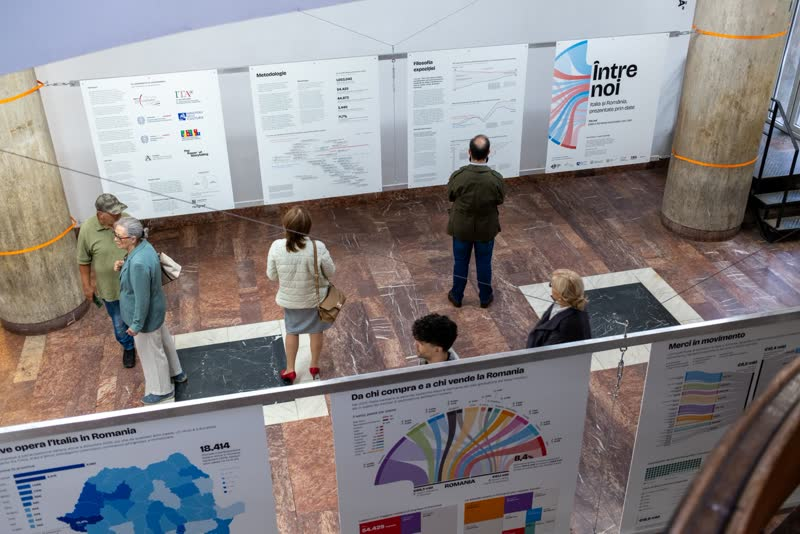

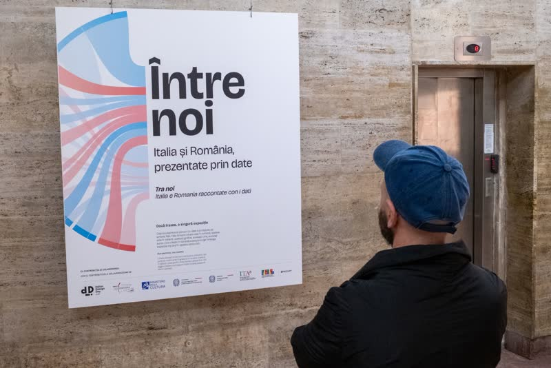

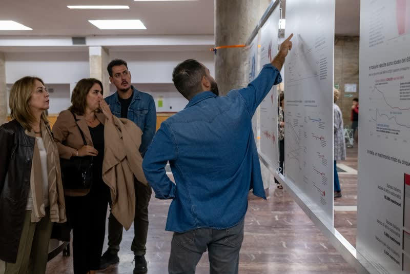

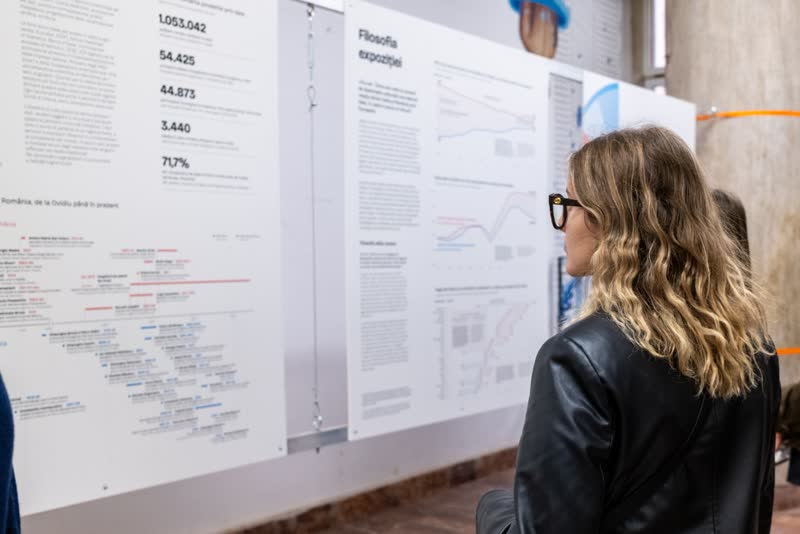

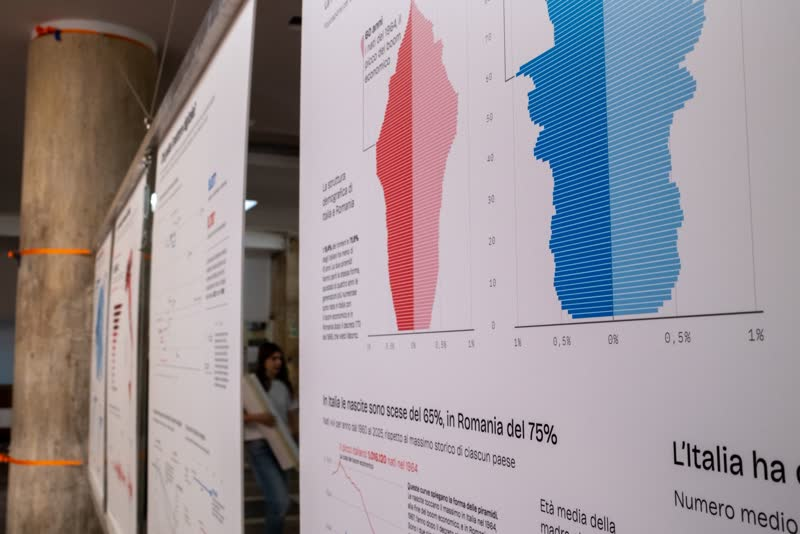

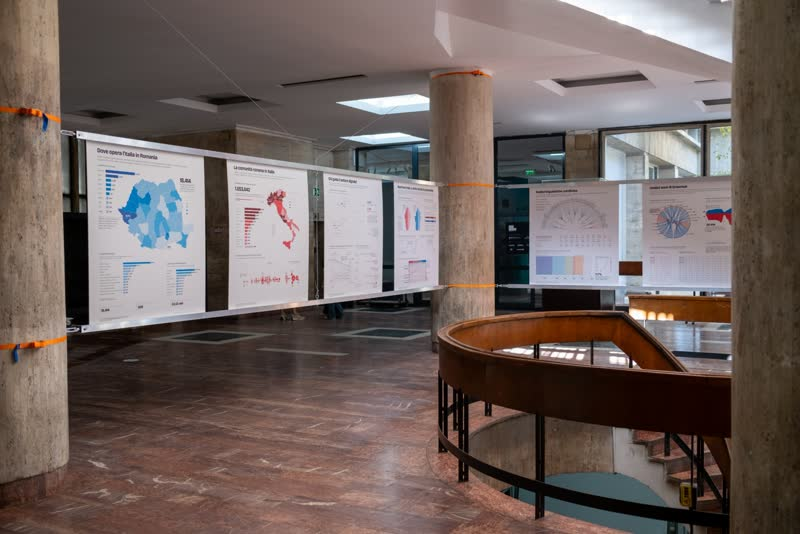

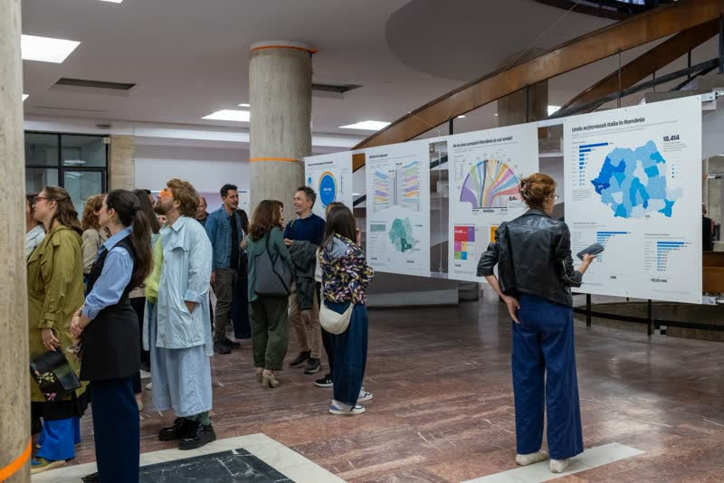

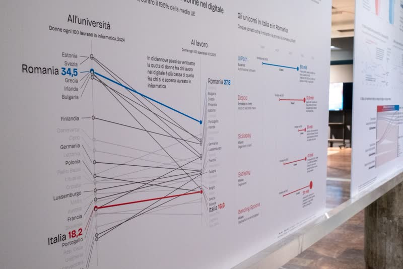

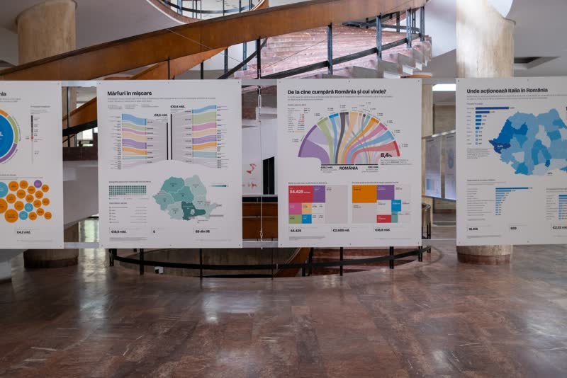

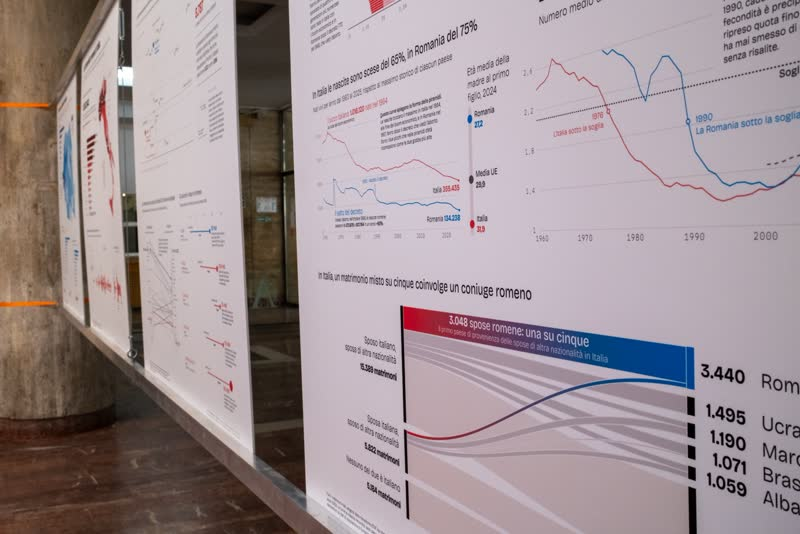

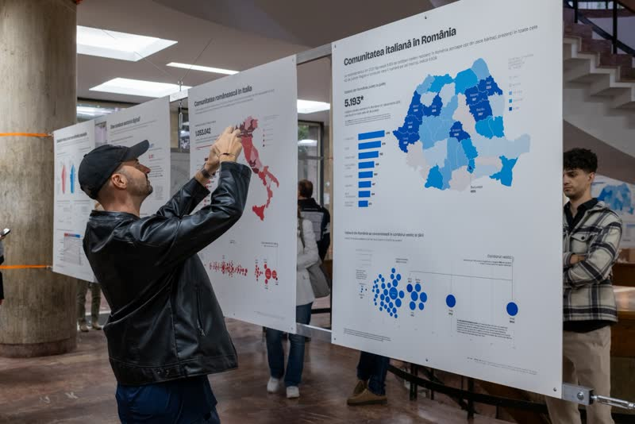

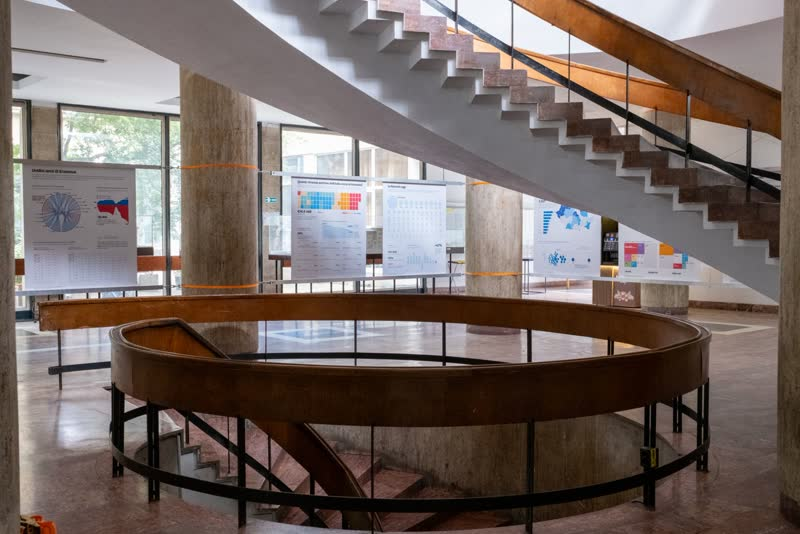

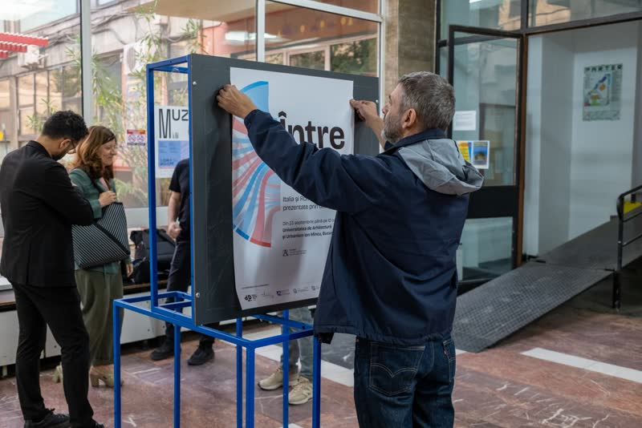

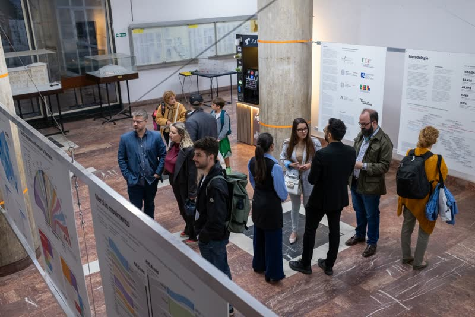

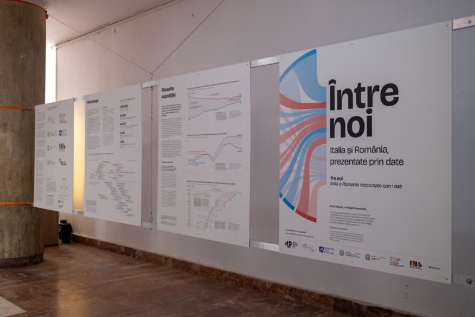
From a bilateral brief to opening night.
-
Brief
Which two countries, which story, which audience. We agree on the relationship you want the public to see, and the venue it has to fill.
-
Research
We gather and verify the data: trade, investment, cultural exchanges, language, culture. Official statistics and archives, with every number sourced.
-
Design
Panels, maps and installations built for a hall, not a screen: legible from three metres, rewarding at thirty centimetres.
-
Opening
Print-ready files, installation support, and a film and social kit, so the exhibition keeps travelling after the doors close.
- Embassies
- Cultural institutes
- Trade & investment agencies
- Chambers of commerce
- Foreign ministries
- Festivals & universities
Two countries, one story. Let’s turn it into action.
Tell us which relationship you want to show, and where. We’ll come back with a concept, a data plan and a timeline within a week.